Feasibility of Renewable Energy for Schools in Romania
At this point the negative effects of pollution, both for the planet and for our health, are no longer a secret for anyone.
However, the reality is that we cannot discuss switching to renewable energy without mentioning money. This brings us to today's case study, in which we will attempt to determine, using concrete data, how economically viable a transition to renewable energy is for schools in Romania, an Eastern European country already struggling due to economic problems.
So grab a cup of coffee and come along with me as we collect, clean, and analyze data to find the answer!
First we need a list of all Romanian schools. Because there is no official existing one, we will have to create it ourselves.
On this website we can find 378 pages with basic information about all of the country's educational institutions. We will scrape the website using the Python script below and collect all of the data in a CSV file, nicely organized and easy to work with.
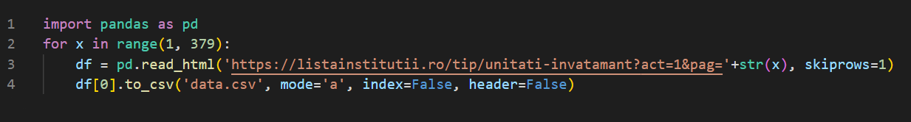
However, the list also includes universities, kindergartens, and others that are not relevant to our analysis, so some cleaning is required.
The data we gathered looks like this:
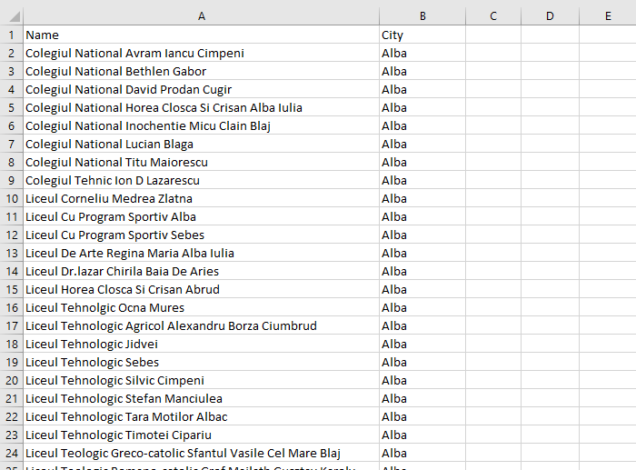
As you can see, there are two columns: one lists the school's name, and the other lists the city where it is located.
In the next steps we will try to find the necessary data for as many schools as possible. However, there is a very high probability that we won't find it for many of them so to make sure that what's left will be enaugh to be relevant we need a method to test the diversity of the data.
The python script that follows will attempt to find each school's geographic coordinates and save them to our file:
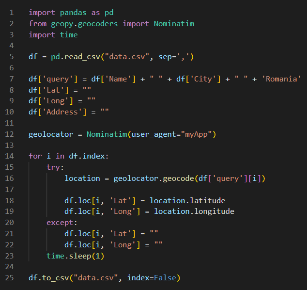
Notice the newly created columns
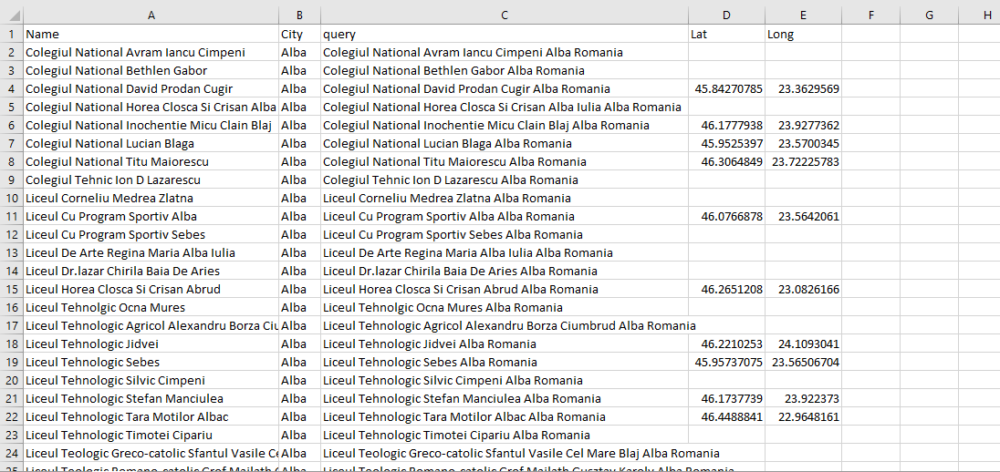
We can see that we did not find all the coordinates, but in my opinion, we have enough material to move further.
Every year, all schools are required to provide documents detailing the list of expenses for the previous year, including gas and electricity bills, on their websites. We must therefore include the schools' websites to our file in order to proceed.
We can do this automatically by running the script below. It works by performing a Google search personalized for Romania with the name of the school and the city in which it is located, then adding the first retuned result to our list.
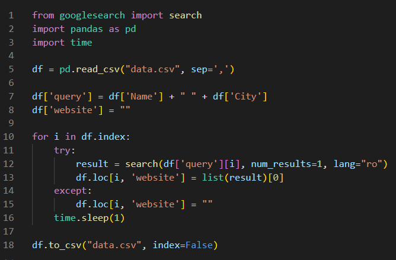
This is how our file looks now:
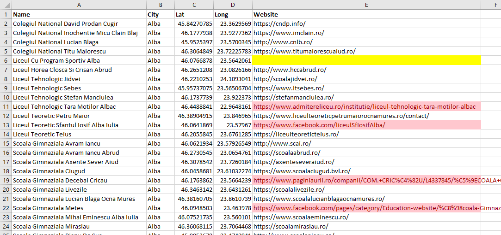
As we can see, a new column has been added. But there's a problem. All of the red-marked cells have the incorrect website (either a Facebook page, something Yellow Pages-like, and so on). Why? because not all Romanian schools have a website And, despite the fact that they are required to publish those documents, not all of them care. And this will cause us more problems later, but for now we can not do anything but remove them from our list.
Then, we'll use the website links to find the published documents. But there's another issue here. There is no standard method for determining how and where documents should be published on the website. The majority of them are low-quality scanned images and all we know is that they all contain the word "buget" (budget) somewhere in their name and are uploaded as pdf files. So, let's see how we can transform these links to make our search easier.
Using this Excel function, we'll first clean up the URL so that it only contains the domain name (ex: https://www.example.com/ -> www.example.com):
This is how our data looks now (notice the new column):
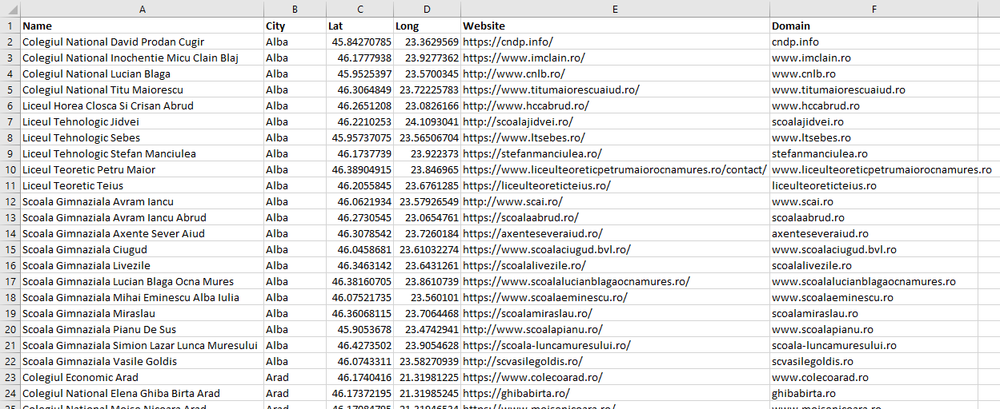
Now we will integrate the domain name in a Google advanced search query using this function:
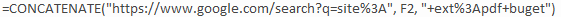
After running it, this is what we get:
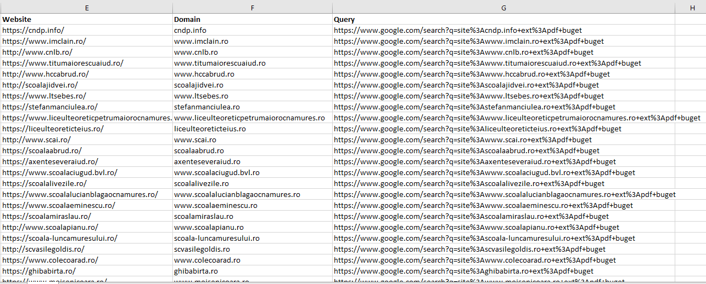
To clarify what this new link does, when clicked, it will automatically search Google for all PDF files containing the word budget from the respective school's website. Here is an example of how our advanced Google search query looks like:
To make things easier, we'll add the newly created URL as a hyperlink for the domain name and remove the columns that are no longer required:
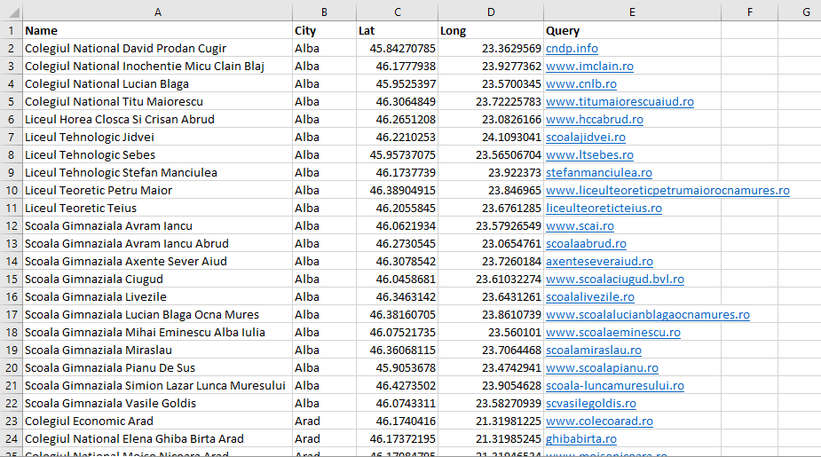
It looks way better! Because there is no way to automate the next step, we will have to access each link one by one, look for the documents (if any), and record the gas and electricity expenses (which, by the way, are added up in one report, not published separately) in new columns organized by years. This is the end result:
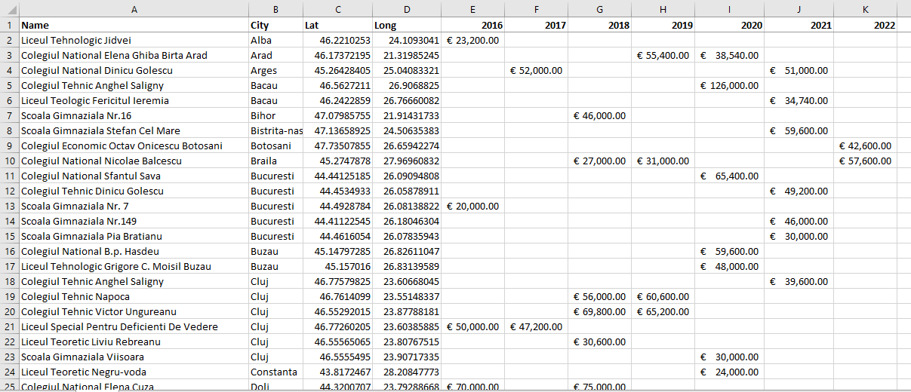
Even if a lot of data is missing, we work with averages, and we need these numbers to get an idea rather than an exact answer, so it isn't a big deal for us.
Now that we've finished collecting and cleaning the data, we can use the coordinates gathered earlier to see how relevant the remaining data is by uploading it to Tableau and visualizing the results:
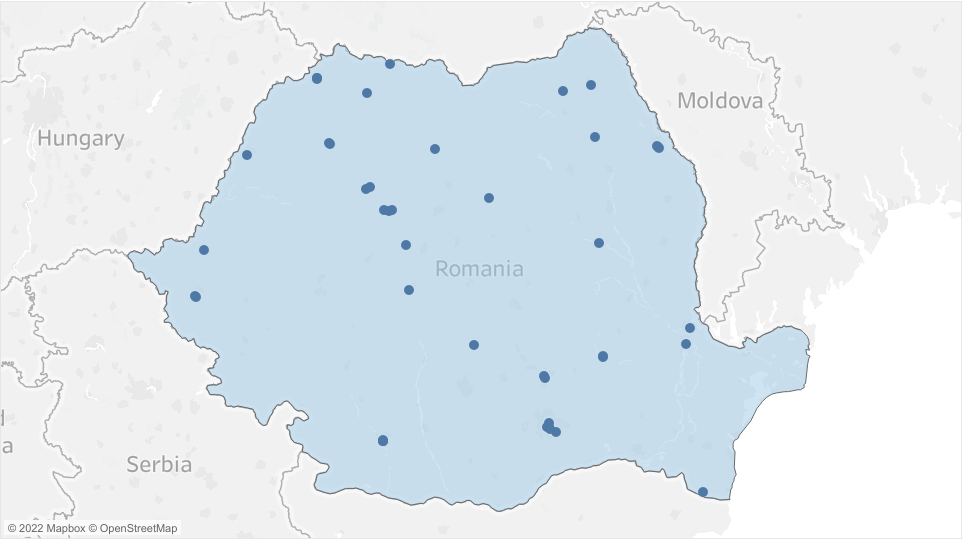
Unfortunately, we can see that the number of remaining schools is not very large. On the other hand, they cover a rather diverse area of Romania, which will help us get more accurate results.
Now let's do the calculations:

Keep in mind, however, that the total average can be misleading, because my guess is that energy and gas consumption is roughly the same, while their prices tend to rise from year to year.
Furthermore, by plotting them on a graph, we can easily see the well-known tendency of energy prices to rise, especially during this period:
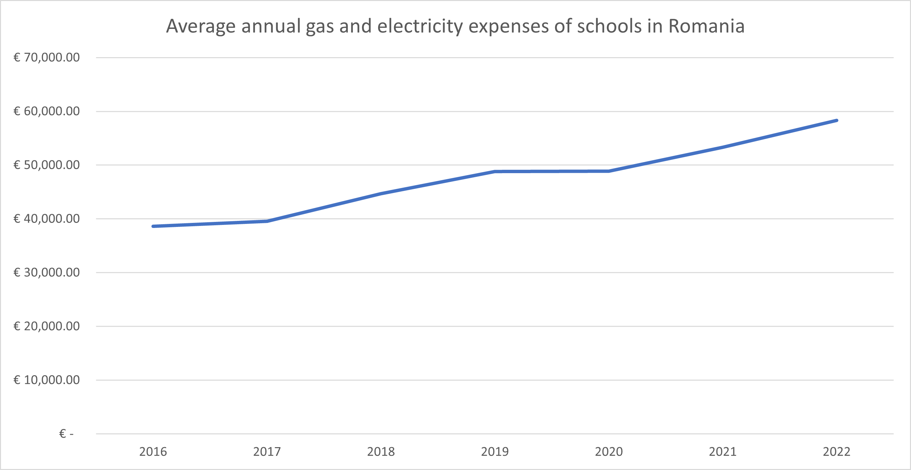
We can now move onto the next phase of our analysis, in which we will attempt to determine how many kWh of electricity the average Romanian school consumes per year.
On this website we can find a list of the kWh/month consumed by specific schools in 2018, as well as their surface. Although the list is pretty short and the data is limited to a single year, it provides us with enough information to get an idea.
Let's put everything in a spreadsheet and do some calculations:
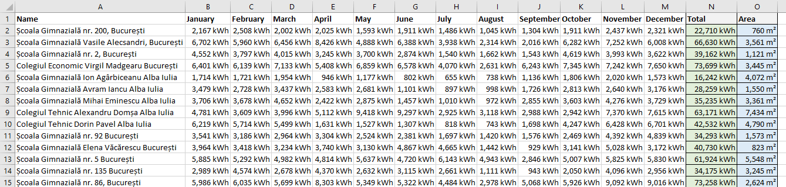
What we're interested in is the average annual electricity consumption of all schools, as well as their average surface (which will be helpful later when we're looking for a heating solution):
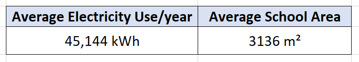
Keeping these figures in mind, we can proceed to the next stage of the analysis, in which we attempt to calculate how powerful a solar panel kit should be on average in order to cover a school's entire electricity needs in Romania, as well as the investment.
Despite Romania's relatively large solar potential, public information about solar panels and their production rate throughout the year appears to be limited to non-existent. So I believe the most practical approach will be to look for a similar project somewhere in the country and try to scale its numbers to a national average. Please bear with me as we will need some math in this section.
After a little search, we can find out that the Polytechnic University of Bucharest has installed a 30 kw solar panel system which, according to them, has an output of around 60 mWh per year (60 000 kWh per year).
However, looking at this map of horizontal irradiation from the sun in Romania, we can see that Bucharest is more strongly irradiated than the rest of the country.
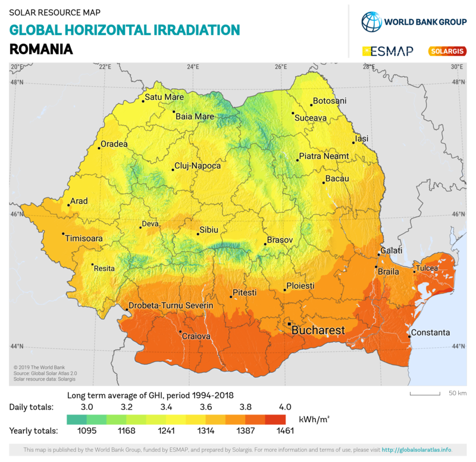
According to this website, the horizontal irradiation in Bucharest is 1374.3 kWh/m2. However, the average horizontal irradiation in Romania is 1,259 kWh/m2, which is 9.1% lower.
So, if a 30 kW solar panel system in Bucharest can produce approximately 60,000 kwh/y, a 30 kW system in Romania can produce 9.1% less, meaning 54,600 kWh per year. Let's keep this in mind.
Let's look at the electricity consumption of a Romanian school over the course of the year using the data we collected earlier:
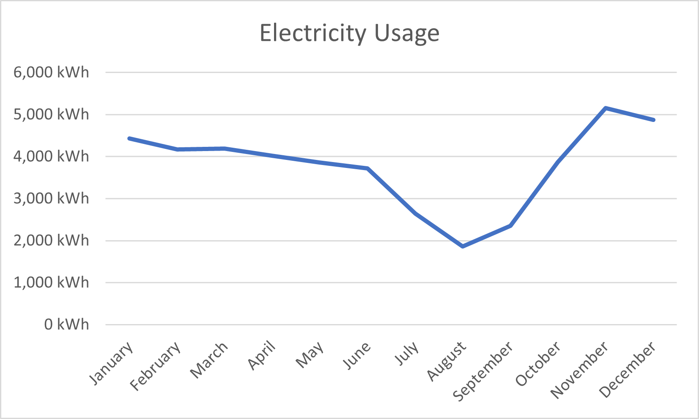
Now consider how solar irradiation is distributed in Romania on average throughout the year:
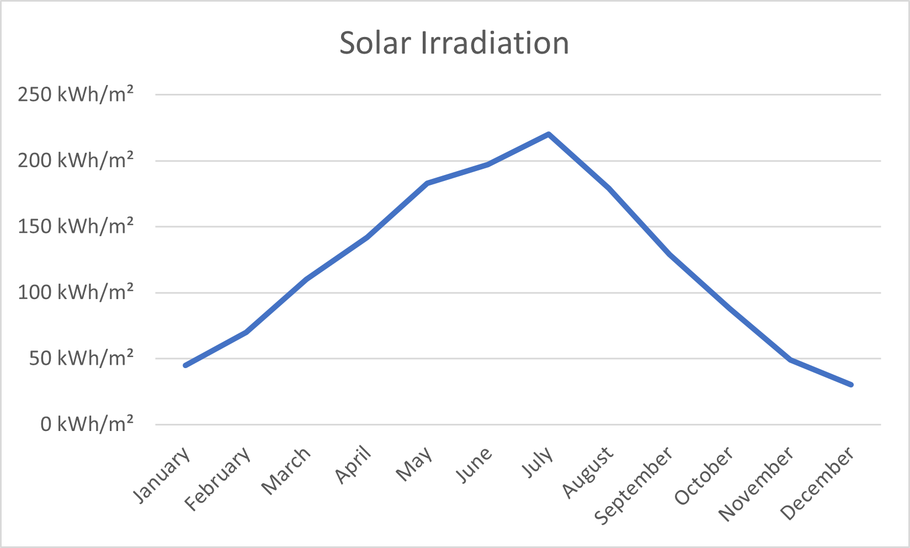
In Romania, you can sell electricity to the grid for half the cost of purchasing it and then buy it back when you need it.
We can see that in the summer, when the school uses less electricity, solar panels have a higher production rate, whereas in the winter, when more electricity is required, the production rate is lower.
It wouldn't have been a problem if we could have sold the electricity to the grid at the same price we would have bought it, as we could have kept the neutral price goal. However, because we sell for half the purchase price, our solar panels must produce roughly one-third more electricity than we require. This way, when we have a surplus of electricity, we can sell it to the grid and buy it back when we need it without incurring any additional costs. Now let’s do the math.
A school uses approximately 45,000 kWh per year on average. A third more would add up to 60,000 kWh per year. Because it has to produce the same amount of power as the solar panel kit used in Bucharest, it is easy to notice that all we need to do to achieve it is to increase the 30kw system by 9%, resulting in a 33kw system.
After some research, we discover that a 35 kW photovoltaic system, which is slightly more powerful than we require, costs around €25,000. The good news is that installation is included.
However, it is understandable to wonder: Shouldn't we generate some extra electricity just to be safe? Perhaps there will be less sunny days or more electricity will be used in certain years…
Although this is a legitimate concern, I do not believe that spending more money to purchase additional solar panels is the solution. But we'll get into this more later.
For now, let's move on to the next phase of our analysis where we will attempt to find a greener, less expensive, and more efficient method of heating.
Because there is no centralized hot water distribution system in Romania, all schools use local gas boilers, hot water being distributed through a system of pipes to radiators
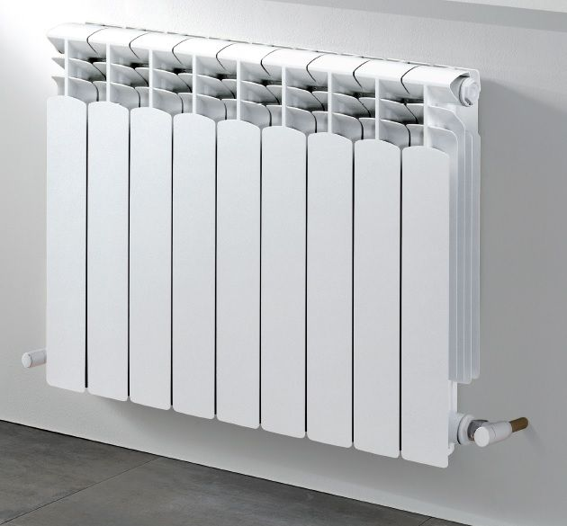
Now let's see what better heating alternatives we can find.
Option 1: Solar thermal panels
Solar thermal panels or solar collectors are devices that are mounted on the roof to absorb the sun's heat and use it to heat up water, stored in a cylinder. They are more efficient in heat production than photovoltaic panels, and considering we have plenty of space on the roof, the installation should be pretty straight forward.
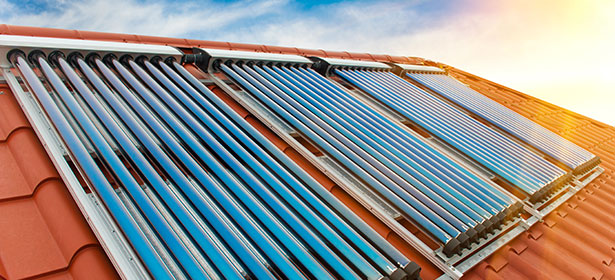
In Romania, however, the outside temperature frequently drops below 0° Celsius (freezing level) during the winter, and at this temperature the panels become ineffective, so it’s easy to notice why they become an unviable option. Let move on to the next one.
Option 2: Air source heat pump
An air source heat pump works by transferring heat absorbed from the outside air to an indoor space. This works via the wet central heating systems to heat radiators and provides domestic hot water. Heat pumps work similarly to a refrigerator: they absorb heat and transfer it to another medium.
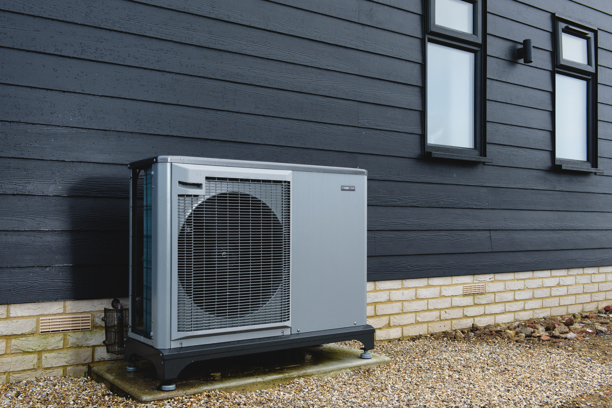
Unfortunately, they suffer from the same issue as solar thermal panels. They become ineffective when the temperature falls below 0° Celsius.
Option 3: Ground source heat pump
A ground source heat pump (also called geothermal heat pump) is a heating/cooling system for buildings that uses a type of heat pump to transfer heat to or from the ground, taking advantage of the relative constancy of temperatures of the earth through the seasons. Ground source heat pumps are among the most energy-efficient technologies for providing HVAC (heating, ventilation, and air conditioning) and water heating, using far less energy than can be achieved by burning a fuel in a boiler/furnace or by use of resistive electric heaters.
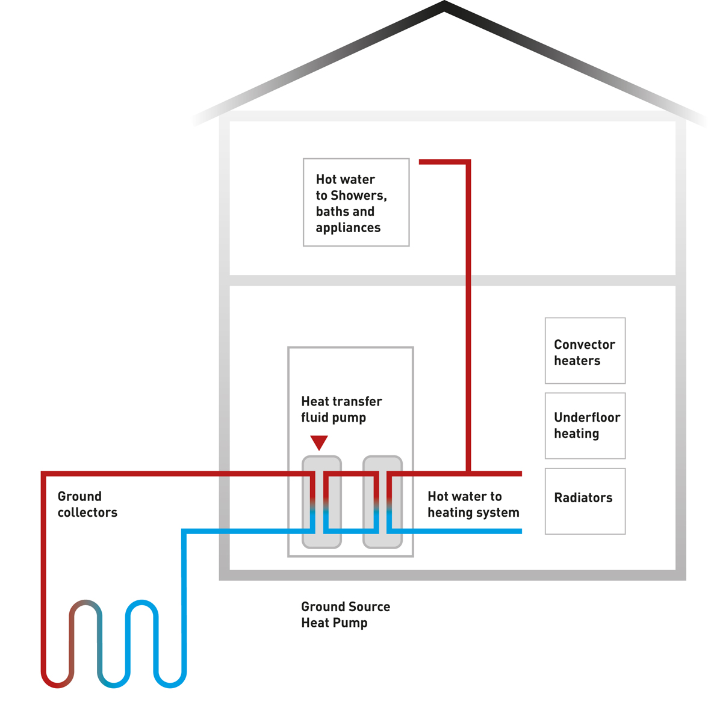
Given that it can operate at maximum efficiency regardless of the outside temperature, it is clear that this is our choice. Furthermore, we can use the already existing system of pipes in the school to reduce costs.
Now, let's see an indicative price.
As noted previously, the average surface of a school in Romania is approximately 3,100 m2, and we know that most of them have undergone various renovations, so their insulation is quite decent. After some research, we can see that the cost of a geothermal heat pump system powerful enough to heat this surface is around €27,000. When we include the installation cost, we arrive at a price of around €30,000.
Let's put everything together and calculate the final results.
The solar panel system will cost us around €25,000. The geothermal heat pump will cost around €30,000. So, when we add them all up, the total cost will be around €55000. According to the data we gathered previously, the average yearly electricity and gas expenses for a Romanian school were around €47,000. This means we'll be able to recover our investment in under two years.
Wait, doesn't this sound too good to be true? Is there a problem with our data? After some research I believe I have found the answer.
However, in order for you to understand, we must first go back in time. Every city in Romania used to have one central water heating and distribution plant. However, because this method proved to be too expensive and ineffective, these plants were closed about eight years ago, and everyone was required to find their own alternative, which most of the time meant local gas boilers, and schools make no exception.
But where is the issue? I reached out several schools to find the answer, and all of them told me the same thing: these gas plants are still running on the old infrastructure, which means that fresh cold water is constantly pumped into the boilers, heated, and then drained out after only one use.
Although this was not a problem back then, it now simply means that the gas boilers must run at full capacity all the time, resulting in unusually high gas consumption.
However, according to several plumbers I spoke with, when we install the heat pump we can modify the pipe system relatively inexpensively so that the water circulates in a closed loop. This way, after being used once, the heated water will return to the heat pump and be reheated until it reaches the desired temperature again, before being pumped back into the system, and the cycle repeats itself. As a result, our heat pump will not have to operate at full capacity all of the time, and therefore its efficiency will be high.
Now that we've cleared that up, it’s time talk about why I don't think we should buy some extra solar panels, even though it appears to be a good idea at first glance.
The school's main electricity consumers are video projectors, air conditioners, light bulbs and computers. And, while the air conditioners and video projectors are rarely used, the lights and computers are working almost constantly.
So instead of purchasing additional solar panels, I believe we can find ways to consume less energy by using more efficient equipment. Here's what I mean:
Most schools I've heard of use fluorescent light tubes for lighting, which is a highly inefficient and toxic to the environment technology.
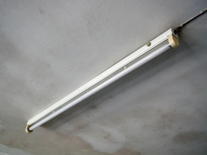
By swapping them out for LED tubes, we can reduce the amount of electricity used for illumination by about 80%, and even though they are typically more expensive upfront, their lifespan is about double.
Additionally, the majority of the computers used in schools are outdated and require a lot of electricity, while also being very slow.
If we replaced them with modern all-in-one computers, we would use a fraction of the electricity we do now and even inexpensive all-in-one computers would be considerably more powerful thanks to new technologies.
In a typical school, there are one to three computer labs, each with about 30 units. Therefore, even though replacing such a huge number of computers initially looks expensive, we must keep in mind that many tech businesses would be happy to sponsor the schools.
Even after these optimizations, with a bit of luck we should be able to recover our investment in less than three years.
Next, I will present my proposal for what we can do with the money we will save.
Because the Romanian education system has many problems, the possibilities for putting the money to use are limitless.
We can purchase new study materials, upgrade the technology, and the list goes on. However, I believe there is a much important issue that must be addressed.
According to Eurostat, Romania has the highest number of students who drop out of school in Europe. More than 15% of young people aged 18 to 24 have not completed more than 8 years.
Although there are numerous reasons why students drop out of school, poverty is the most common. Many parents, particularly in rural areas, struggle to feed their children, let alone keep them in school. Although the problem is far too complex to address here, and the solution is likely to be far more expensive than we can afford, there are a few things we can do to help alleviate the situation.
The first thing we can do is provide vulnerable children with a hot meal at school every day. We can also assist them with new clothing, books, and even personal hygiene products. In this way, we can relieve some of the burden from the parents, who will be more willing to keep their child in school. We can also include these children in extracurricular activities such as sports or camps that they could not otherwise afford. And even if these money are insufficient, I am confident that various European funds can be accessed for this purpose, and there are numerous non-governmental organizations willing to give a helping hand.
All this being said, we have reached the end of our analysis. it's time to say the last thoughts, and draw a conclusion.
Because each school has unique characteristics, a personalized analysis must be performed for each one of them before implementing any measure.
The objective of the case study was to determine whether the transition to renewable energy would be economically feasible for Romanian schools. And, although we cannot speak for each one individually, on a national scale the answer is indisputably yes!